ACCESS
양정역과 연결되는
양정역과 연결되는
1층 메디컬 특화 공간
양정역 직통 연결로 환자와 보호자의 접근 편의성을 고려한 입지입니다.
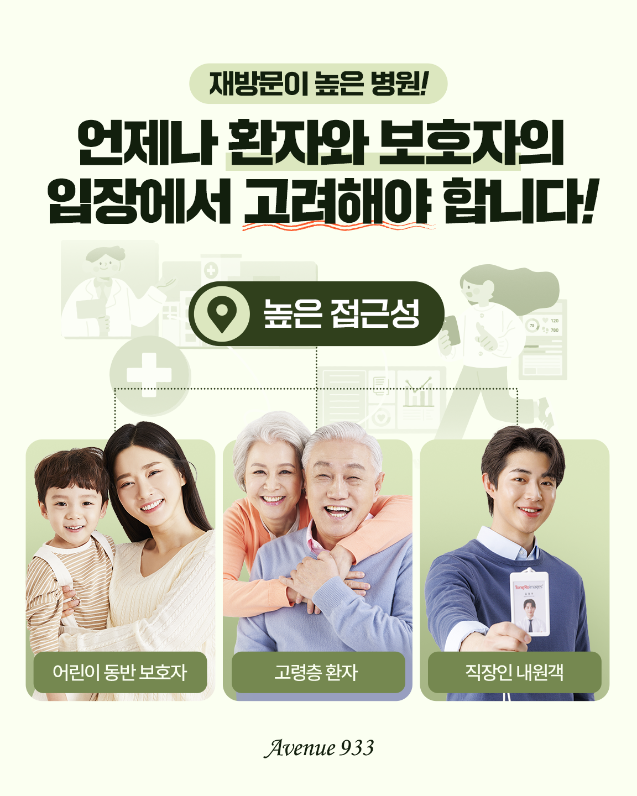
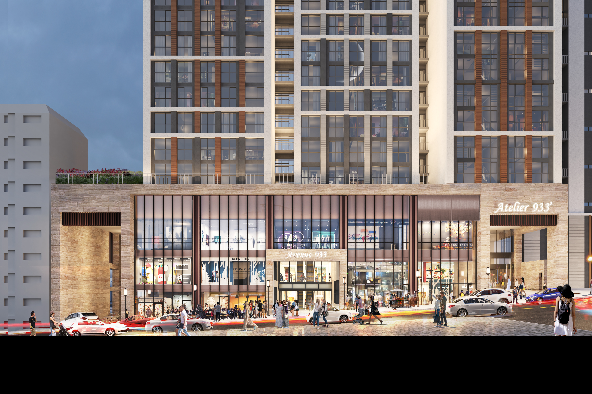
AVENUE 933 · MEDICAL
병·의원 개원을 위한 입지와 공간을 애비뉴933에서 만나보세요.
※ 상기 이미지는 이해를 돕기 위한 이미지로 실제 현장과 다를 수 있습니다.
ACCESS
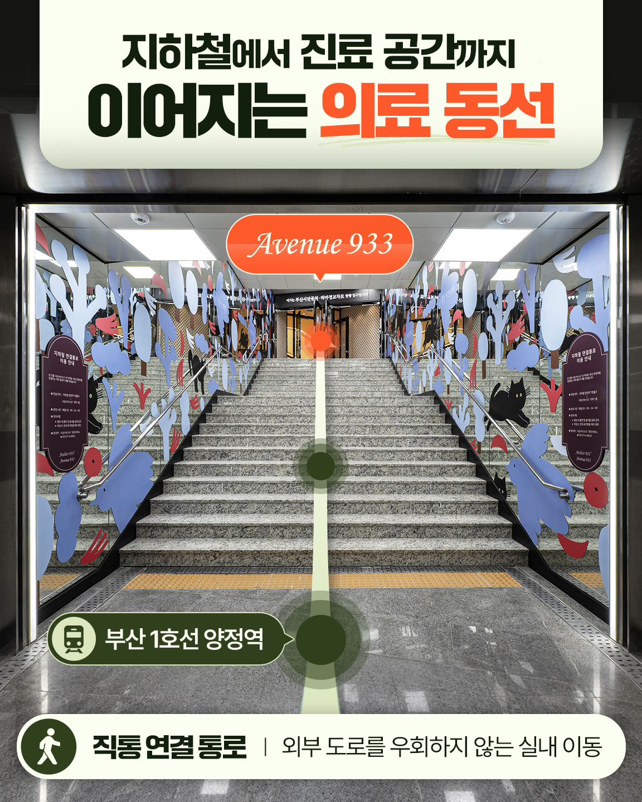

SUPPORT
개원·마케팅 전략 자문 / 언론 홍보 / 블로그·SNS 홍보 / 홍보물 제작
※ 지원 범위와 기간은 계약 조건에 따라 달라질 수 있습니다.
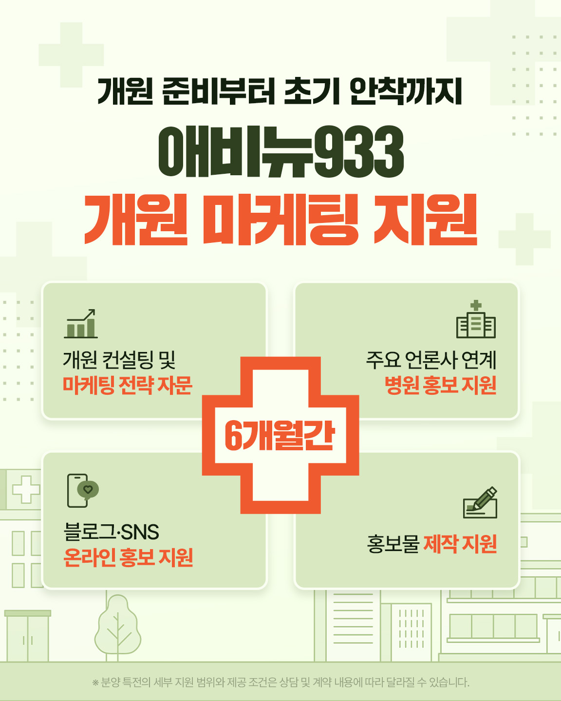
OPENING INFO
양정역 직통 연결 입지와 메디컬 특화 진료과 구성을 한눈에 확인해보세요.
양정역 직통 연결로 환자와 보호자의 접근 편의성을 고려한 입지입니다.

배후수요와 공간 구성을 고려한 추천 진료과를 안내합니다.
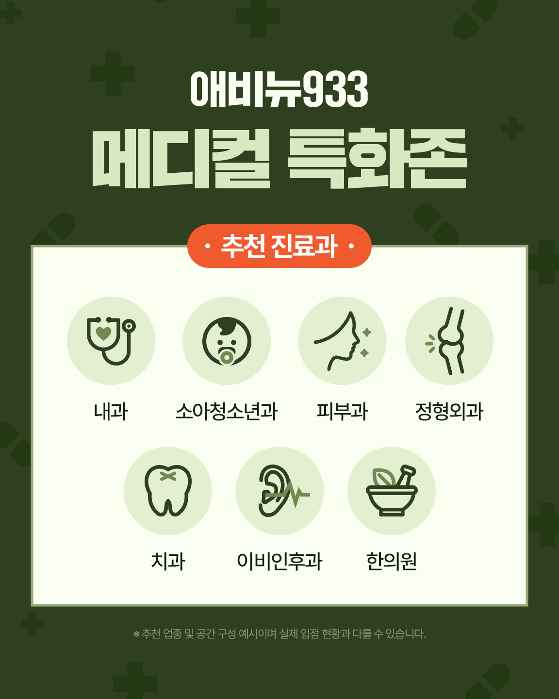
ROUTE
양정역과 연결되는 이동 동선으로 환자와 보호자의 접근 편의성을 높였습니다.
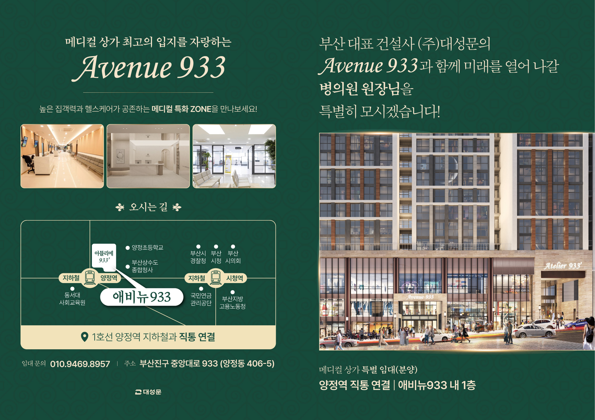
LEASING
1층 메디컬 공간부터 배후수요, 임대·매매, 개원 지원까지 주요 입점 정보를 확인할 수 있습니다.
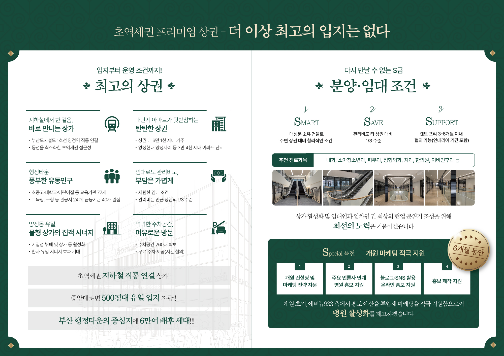
LOCATION
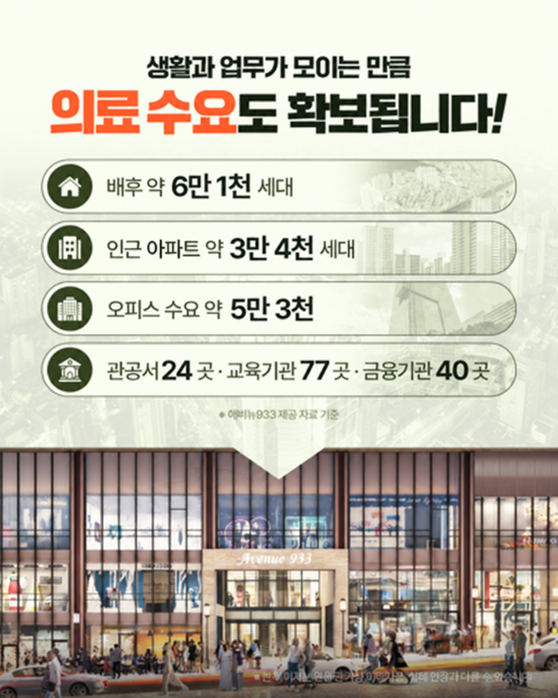
※ 애비뉴933 제공 자료 기준.
LIVING AREA
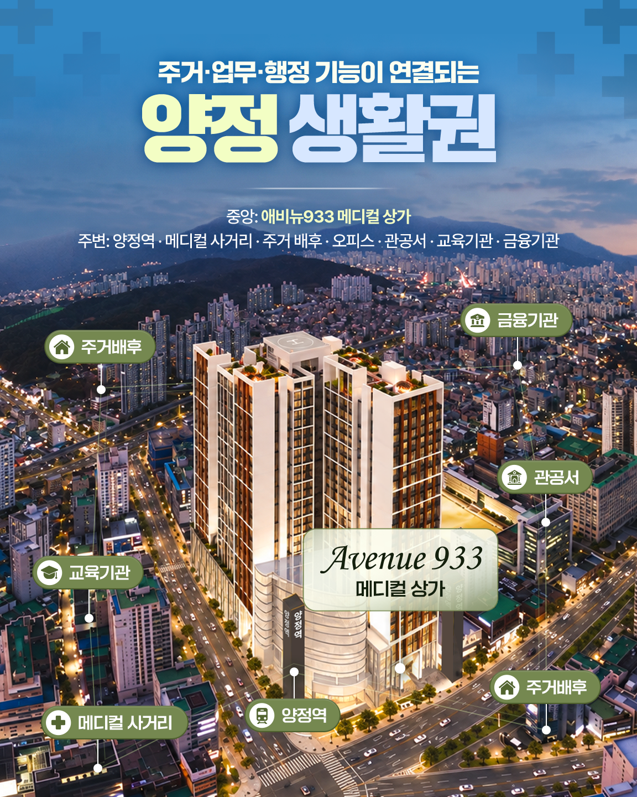
MEDICAL CLUSTER
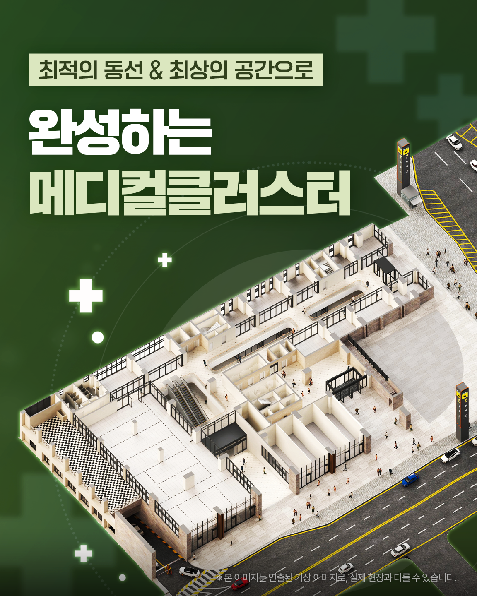
MEDICAL SPACE
진료과와 운영 방식에 따라 다양한 공간 활용이 가능합니다.
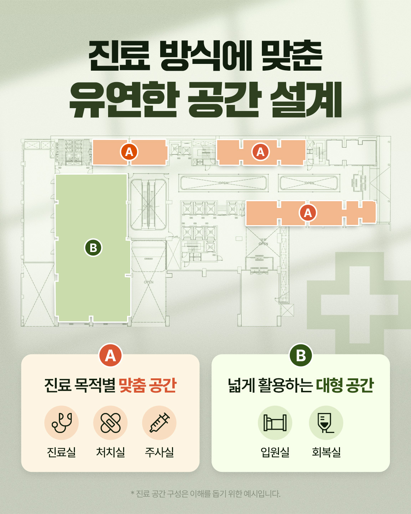
SPACE
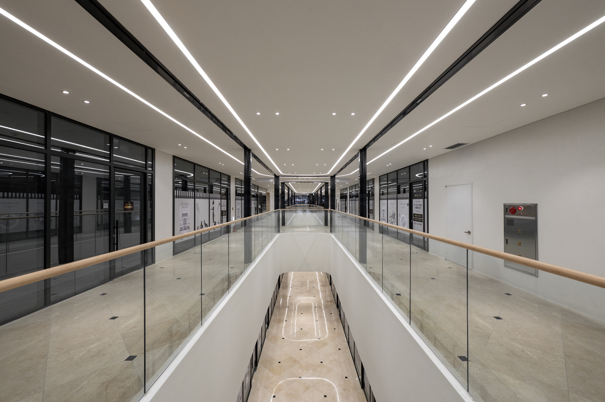
※ 실제와는 차이가 있을 수 있습니다.
2F SPACE
애비뉴933 2층에는 프리미엄 스시뷔페 고메스퀘어가 자리하고 있습니다.
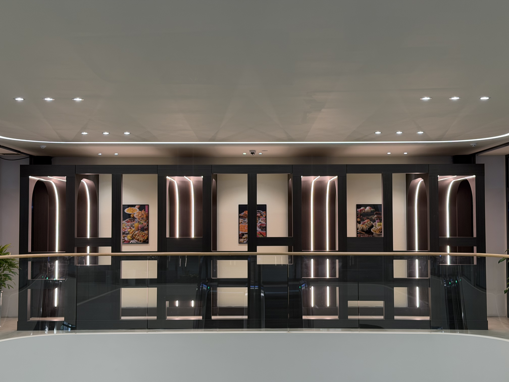